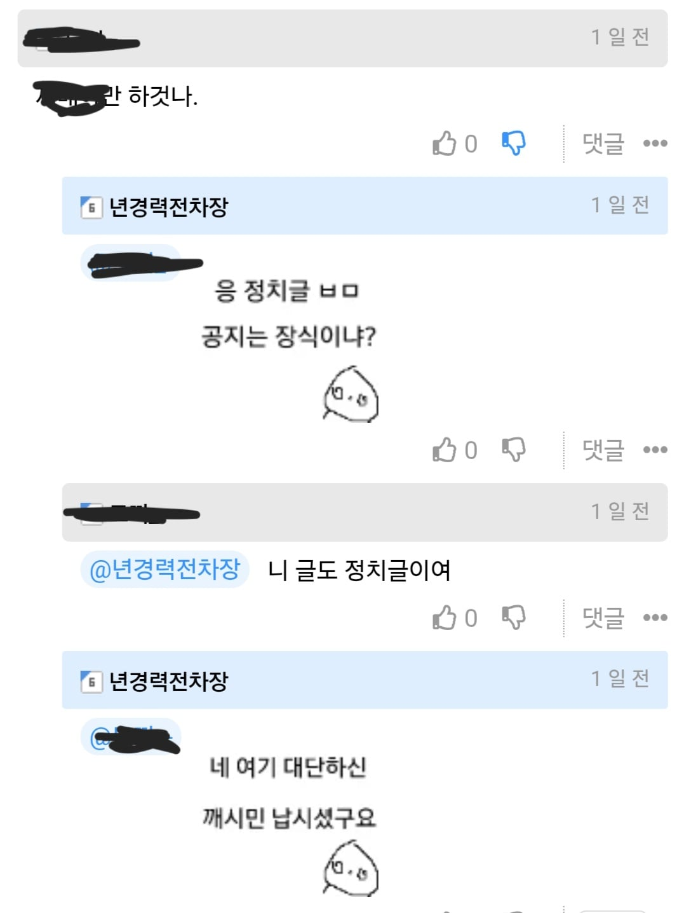

요새 댓글에 ㅇㄱㄸ 돌려서 올리는새끼들 신고해도 잘 안잡는거 같다는 느낌 존나 드는데 이젠 대놓고 현직 ㅇㄱㄸ 별명 올려도 안잡는다??
이정도면 공지 읽은게 병신이지?
그럴거면 야짤도 풀어 ㅅㅂ

요새 댓글에 ㅇㄱㄸ 돌려서 올리는새끼들 신고해도 잘 안잡는거 같다는 느낌 존나 드는데 이젠 대놓고 현직 ㅇㄱㄸ 별명 올려도 안잡는다??
이정도면 공지 읽은게 병신이지?
그럴거면 야짤도 풀어 ㅅㅂ
아무래도 일일이 모니터링하는거 힘들다고 일 내팽개친건가
개드립 나름 장점이라 여겼던게 정떡 기준이 명확해서였는데
요즘은 잘 모르겠음
백화요란 캐릭터는 진짜 최고의 디자인임 뿌까머리 캐릭이 애초에 많긴하지만
젖
정치 글 아직까진 난립하지 않아서 좋은데 관리 안하면 곧일듯.. 그때가 떠날때인거같다
요새 제재 안함?
전직 대통령 이름 박아놓고 역사인데 지적하는 인간들이 정치병자다 정사판 가라 ㅇㅈㄹ 당당하게 함
가는 놈들도 신고 누적으로 자동으로 갔다오는거지 승희가 직접 제재하진 않는거 같음
문제되는글 와드박고 관찰해보면 임시나 삭제 가는글 분명 있긴함
예전엔 웃음소리 두글자만 올려도 가차없이 썰었는데 지금은 그냥 손놨음
승희씹새끼 요새 신고해도 잘 안잡는다
뭐라고 써 있는 거임? 개돼지?
불독조아
요즘 광고만 존나띄우고 재제안주는것같던데
메이드 아스나랑 백화요란은 진짜 개꼴리네
예전엔 옳그떠랑 도배나 심한 패드립 다 잡았는데 이제 걍 안잡음
분탕쳐도 됨
말투나 내용이나 정치질하러 온 애들 꽤 보이는데 승희 진짜 뭐함? 깃발 올려 내려 하고 있나?
야짤은 승희가 저장한다고ㅡㅡ